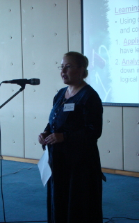

|
 |
TEACHING ONLINE CASE STUDIESThe use of the case method to teach college-level courses is not new. With the advent of online education and the increasing demand from students to take online courses to further their educational goals, educators must stay abreast of the strategies and techniques for teaching effectively in the virtual classroom. The purpose of this presentation is to cover the use of the case method in teaching and facilitating psychology online classes. It will show how the case method can be used as a proactive problem-solving technique, particularly with new online students. Participants will gain an understanding of what is critical for teaching the case method online, in addition to being exposed to procedures that have been effectively used in virtual classrooms. Example cases will be discussed. Pedagogical approaches to working with seasoned and new online students will be presented. The case studies presented for online psychology classes give concrete situations that can be used to stimulate analysis, requiring students to project how they might respond to a set of circumstances. The presenter will discuss ways to foster and build a strong online community through people approaches and process approaches. People approaches include having clearly defined roles, creating subgroups so learners have their own online space for group activities, and providing a way for learners to create personal profiles that include photos and salient information on the topic. Process approaches include establishing guidelines for online etiquette, fostering trust, and creating a buddy system. Although the case approach includes discussion, debates, and the trial method, the presentation will focus primarily on the discussion approach. For this approach, instructors present a case that requires students to make an evaluation. In an online abnormal psychology class, for example, cases can be presented in which a person may or may not be suffering from a mental disorder. Students can then try and diagnose the case according to the Diagnostic and Statistical Manual criteria. This presenter’s experience writing a case will be discussed. Several critical factors make it necessary to offer this information to educators. First, many educational intuitions are offering online courses in addition to their traditional on-site classes. Second, online teaching is part of a new educational culture with its own distinct characteristics; therefore, teaching strategies must be targeted to this special educational climate. Furthermore, many educators are new to online education so they need methods that will get them started teaching successfully in the online environment. The case method can be used effectively in the virtual classroom to promote problem-solving skills, teach critical thinking, and apply course material in a fashion that fosters Socratic dialogue. Moreover, the case method can be a good vehicle for stimulating students’ thoughts about step-by-step planning. |
© 2008 Victor Karandashev